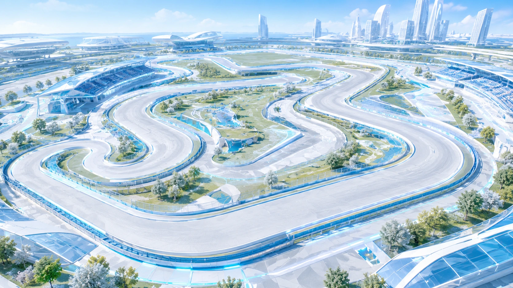
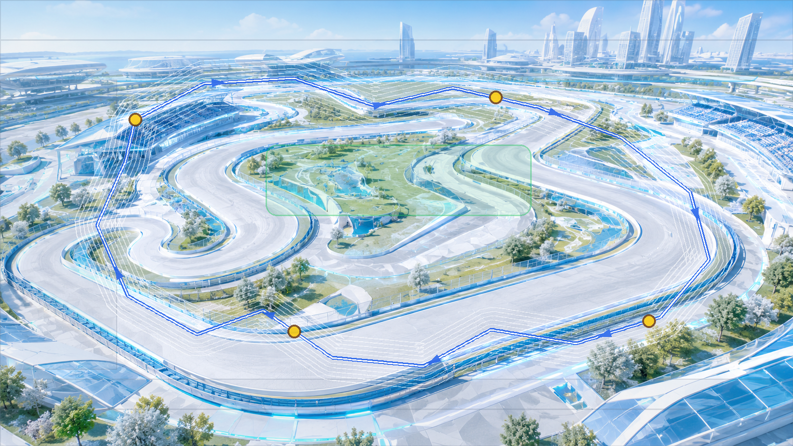

Bright Complex Closed Course 候选资产读图


检查重点
- 是否闭合成一圈，但不像普通椭圆或标准操场。
- 是否比前一版更丰富、更复杂，不再单调。
- 是否贴近
background1.png的冰蓝银白 Jumbotron 风格。 preview.png的中心线是否沿主道路闭合行进。
当前边界
- 这是 candidate asset，不是 confirmed asset。
- 图片不作为位置事实来源，位置事实仍来自
track.profile.json。 - 正式接入前必须用 Calibrator 复核中心线、方向、lane offset、气泡区和单马完整预览。